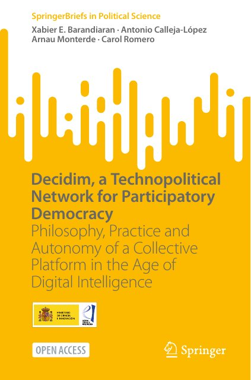

Decidim, a Technopolitical Network for Participatory Democracy: Philosophy, Practice and Autonomy of a Collective Platform in the Age of Digital Intelligence
Springer Nature Switzerland, Cham, Switzerland
Abstract
This book presents Decidim, the free software platform and community for participatory democracy, and the philosophy, practice and autonomy of a collective platform in the age of digital intelligence. Chapter 1 summarizes the nature of the project, its impact, its history and why it was born in the context of cognitive capitalism and the decline of neoliberal "democracies" on the one hand, and the dawn of digital commons and radical democracy on the other. Chapter 2, the most theoretical, reviews contemporary social and democratic theory to explain the radically democratic vision that Decidim aims to achieve. Chapter 3 covers perhaps the most original aspect of the project, its technopolitical crafting: how technical details are assembled to produce specific political effects, and how the community recursively embodies those technical and political mechanisms in its own constitution. Chapter 4 gives a technical description of the infrastructure: the software, the community and the legal framework. Chapter 5, the most philosophical and speculative, recapitulates the book, projects past, present and future challenges and offers a reading of what Decidim is and could be. The book draws on the IAS-Research group's study of the autonomy of the living, transposed to the autonomy of sociotechnical hybrids. It is published open access under a Creative Commons BY-SA licence.
Keywords
Collective intelligence · Decidim · Democratic innovation · Digital democracy · Digital platforms · Metadecidim · Network society · Participatory democracy · Participatory governance · Political network · Public-commons partnership · Software development · Techno-politics
About the book
From the author’s blog: Decidim Book is out! (1 February 2024)
It has taken almost 6 years since we started writing what, at the time, we called Decidim’s White Paper. Some drafts of the early book have been circulating ever since, but we never completed the story. We were very busy doing Decidim. Years passed, the project settled, and we took the time (thanks Antonio for offering us the great opportunity to push the book forward in Arantzazu!) to finally write it.
The table of contents of the book makes for a good summary:
- Decidim: A Brief Overview
- Here we summarize the nature of the project, its current impact, its history and why the project was born in the context of cognitive capitalism and the decline of neoliberal “democracies” on the one hand, and the dawn of digital commons and radical democracy on the other.
- The Political Plane: Decidim and the Vision of a Radically Democratic Society
- This part is the most theoretical, we review contemporary social and democratic theory to explain the type of democratic vision that Decidim is aimed to achieve.
- The Technopolitical Plane: Decidim as a Democratic Software Paradigm
- This chapter covers perhaps the most original aspect of the project, its careful technopolitical crafting, the way in which technical details are assembled to produce specific types of political effects and how the community embodies recursively those technical and political mechanism on its own constitution.
- The Technical Plane: The Fabric of an Infrastructure
- As the title anticipates, this is the most technical description of how the software, the community and the legal framework of Decidim fit together.
- A Technopolitical Network for Participatory Democracy: The Future of a Collective Platform
- This is perhaps the most philosophical and speculative of all chapters. Recapitulating the content of the entire book, we project past, present and future challenges and provide a reading of what Decidim is and could be.
As an academic publication the book owes much to the work of IAS-Research Group, and its decades of study of the autonomy of the living, now transposed to the autonomy of sociotechnical hybrids like this project: the democratic autonomous assemblage of the organic and the inorganic. The project Outonomy partially financed the publication with Open Access CreativeCommons By-SA licence.
I leave you with two quotes of the conclusions (chapter 5):
At the beginning of this book, we made clear that a project like Decidim might be necessary, but is certainly not sufficient for advancing democracy. There is no future for Decidim or for democracy without a deep transformation of the material living conditions, the social (and global) inequalities and the myriad of oppressive structures that are reproduced every day. Decidim should leave no room for techno-solutionism (the idea that social or political problems have technological solutions). It should equally debunk techno-fatalism. It already has. Decidim is an example of how it is possible to create and deploy a large-scale, radically transformative software project out of the platform capitalist model. An important challenge to any radical democratization process (particularly when addressing struggles) is the problem of coordination of collective action. This is where Decidim should be ready to become a valuable infrastructure, which may then contribute to address the challenges of complexity and conflictuality of society. (p. 124-5)
As a coagulation of hundreds of Metadecidim debates, the movement recursivity includes this very text; and so recrafts thinking, action, and, crucially, the frequently forgotten (re)production. We began suggesting that this book aims to think through Decidim after we did take part in it. Actually, we were thinking through Decidim as we were doing it, and Decidim keeps making and thinking itself today. With this book we came to recapitulate and throw out several lines of flight that show how Decidim has aimed to retie technology, politics, economics, ecology and beyond, and that flight has the form of a living animal: it is the flight of a cyborg owl. The cyborg owl can be taken as an imaginary ode to our animal and our technical, increasingly post-natural and allegedly post-humanist condition. Yet this owl is not the symbol of a Hegelian self-reflective movement that satisfies itself in contemplation, but the owl that flies in the evening to bring, back to the nest, the provision to sustain a new day. It is reflective action and active reflection aimed at producing and reproducing flourishing forms of life. (p.130-1)
Reviews
- Peiruza Parga, J. (2024). Reseña de "Decidim, a Technopolitical Network for Participatory Democracy: Philosophy, Practice and Autonomy of a Collective Platform in the Age of Digital Intelligence". Argumentos de Razón Técnica, 249–274.
- Navarro, F. S. (2025). Xabier Barandiaran, Antonio Calleja-López, Arnau Monterde, and Carol Romero, Decidim, a Technopolitical Network for Participatory Democracy: Philosophy, Practice and Autonomy of a Collective Platform in the Age of Digital Intelligence. International Journal of Communication, 19, 4. ijoc.org/index.php/ijoc/article/view/25463
Cite
Barandiaran, X. E., Calleja-López, A., Monterde, A., & Romero, C. (2024). Decidim, a Technopolitical Network for Participatory Democracy: Philosophy, Practice and Autonomy of a Collective Platform in the Age of Digital Intelligence. Springer Nature Switzerland. https://doi.org/10.1007/978-3-031-50784-7
With the Zotero or Mendeley browser connector this page is detected automatically: one click saves the reference, and the PDF when available.
Publication details
- Type
- Book
- Authors
- Barandiaran, Xabier E.; Calleja-López, Antonio; Monterde, Arnau; Romero, Carol
- Series
- SpringerBriefs in Political Science
- Publisher
- Springer Nature Switzerland
- Place
- Cham, Switzerland
- Date
- 2024
- ISBN
- 978-3-031-50783-0 978-3-031-50784-7
- Language
- English
- DOI
- 10.1007/978-3-031-50784-7
Machine-readable
Markdown · JSON · BibTeX · RIS · llms.txt (index of all publications)